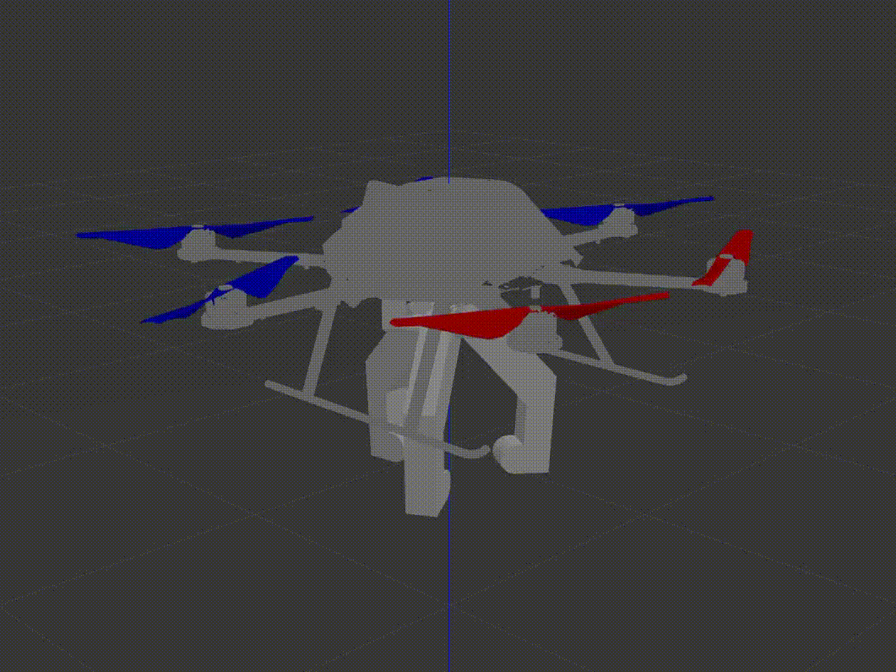

Vishwanath Guruvayur
MS Data Science - University of Virginia.
I love Maggi
About Me
Hello! I'm
Vishwanath Guruvayur,
a Data Scientist with a passion to transform complex challenges into scalable AI solutions.
My journey into Data & AI began while working on robotics projects during my Mechanical Engineering degree at BITS Pilani. Seeing how data drove decision-making in robotics and applications in the real-world opened my eyes to its transformative potential across industries. This insight led me to pursue a Minor in Data Science, where I developed a strong foundation in machine learning and AI applications.
With 3 years of experience delivering high-impact data solutions across multiple domains at Piramal, I've consistently turned business challenges into measurable results.
Now, as a Master's candidate in Data Science at UVA, I'm deepening my expertise in advanced AI techniques while collaborating on innovative projects that push the boundaries of what's possible with data.
What Drives Me
I love how Data & AI complement and enhance our ability to make impactful, data-driven decisions. This involves simplifying complex concepts using visual and statistical tools like visualizations and quantitative evaluation, making information accessible and actionable.
For hobbies, you’ll often find me singing, learning to play the guitar or working on fun personal projects that bring together my passions for music, gaming, and data.
Resume
Professional Experience
Lead Data Scientist
Piramal Critical Care
Jan. 2022 - Jun. 2024
HO Bethlehem, PA (Worked Remotely from Mumbai, India)
Lead various projects implementing Analytics and Data Science in business processes in areas of Supply Chain, Finance and Sales Operations.
-
Inventory Stock Forecasting based on Demand & Expiry
Supply Chain & Finance
Developed an Inventory Utilization Scenario Model to minimize Stock-outs and Financial Write-offs based on recent past sales trends, current warehouse inventory, and future demand forecasting. -
Pharmaceutical Market Share & Growth Analytics
Sales Operations & Finance
Conducted in-depth analysis on the Global Injectable Pain & Anesthetics Market and created a tool with visualization dashboards to recommend the best market and portfolio expansions based on advanced growth-related metrics. -
Feedback Sentiment Analysis - Individual Development Plan
Human Resources
Developed an NLP Ensemble Model based on VADER Sentiment and TextBlob Polarity Estimators to classify employee feedback into improvement themes that get assigned as learnings for the upcoming quarter. -
Inventory Classification and Analytics
Supply Chain
Classification model to segregate stock batches into slow-moving and expiring buckets to raise alerts on potential write-offs. -
Automation of Multiple Reporting Frameworks with End-to-End Smart Data Validations
Python empowered Excel tools to streamline data cleaning and processing with automated dashboards created using XLWings.
Data Science Intern
Piramal - Consumer Products Division
Jul. 2021 - Dec. 2021
(6-Month Internship)Mumbai, India
Data Science Intern in the Business Analytics Team that provides Analytics to the Business Functions of Sales, Finance, Supply Chain, HR, etc.
Worked on 2 main projects:
-
FP-Growth based Product Recommendation Engine
Sales Operations
Modeled a product recommendation engine on the FP-Growth Clustering Algorithm from scratch to recommend the next best product to be sold based on retailer's and hierarchical area's recent product sales. -
Salesmen Attrition Prediction using an Ensemble Model of XGBoost & Logistic Regression
Human Resources
Created an ensemble ML model to predict the probability of salesmen's attrition based on similar behavioral and performance metrics in previous attritions.
Education
Master of Science in Data Science
University of Virginia, School of Data Science
Jun 2024 - May 2025 (expected)
Capstone Project:
- Implementing Multi-Modal RAG based LLM for Education
Sponsored by LMI
Research on methods to leverage Lecture PDFs, Slides & Videos in LLMs to develop an enhanced, context-rich learning experience
- Statistical Learning
- Bayesian Machine Learning
- Deep Learning
- Large Language Models
- Big Data Systems
- Ethics in Big Data
- Foundations of Computer Science
- Linear Models
- Practical Applications in Data Science
- Programming for Data Science
- Data Science Ambassador
- Resident of the Academic Village - The Range
- Monte Carlo Simulator
- Financial Independence Analysis
- Literature Review - Ethical Frameworks around Deepfake and GenAI
- Review - European Union AI Act
Bachelor of Engg. Mechanical Engineering
Minor in Data Science
Birla Institute of Technology & Sciences (BITS Pilani)
2018 - 2022
Relevant Coursework:
- Foundations of Data Science
- Applied Statistical Methods
- Engineering Optimization
- Non-Linear Optimization
- Control Systems
- Machine Learning
- Artificial Intelligence
- Swaranjali (Classical Music Club)
- Sanskrit and Foreign Languages Club (SaFL)
- Astronomy Club (AdAstra)
- Department of Sponsorship & Marketing (DoSM)
- Genetic Algo based Emotion Detection
- Computer Vision Based Real-Time Object Detection
- Swarm Robotics - Collaborative Object Collection

Personal Projects
This is a list of projects where I combine multiple interests and curiosities into learning pieces.

{kind=link}
{kind=link}
{kind=link}
{kind=link}
{kind=link}
{kind=link}